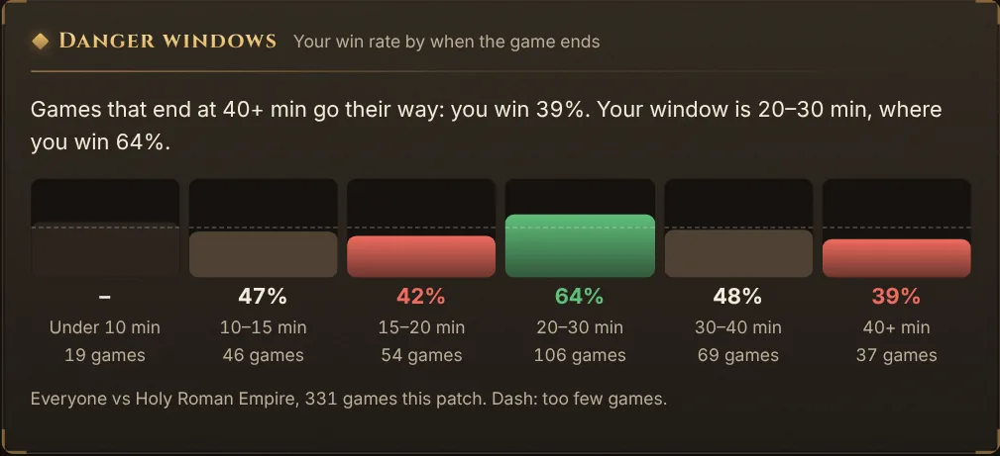
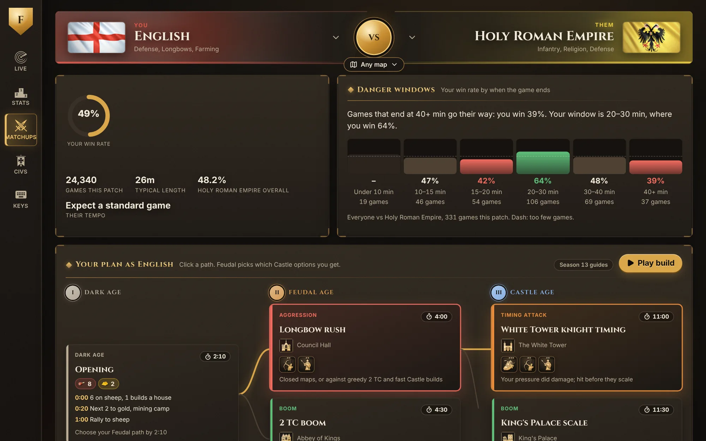
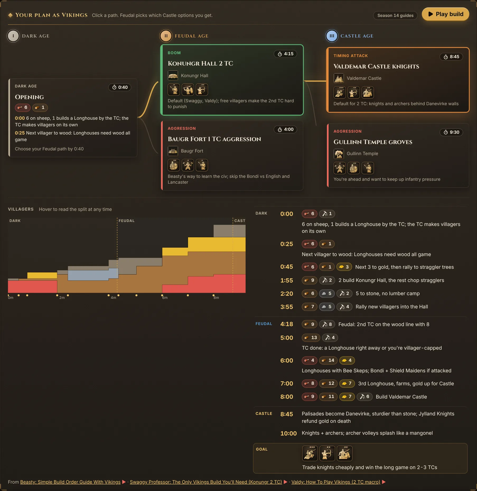
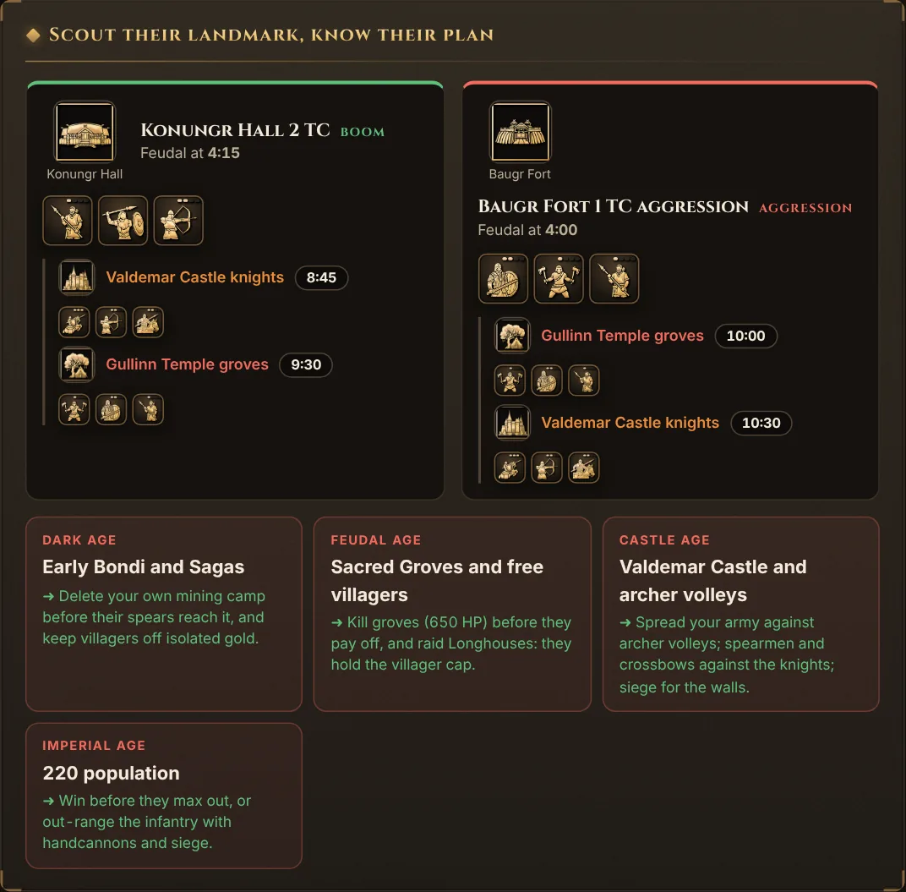
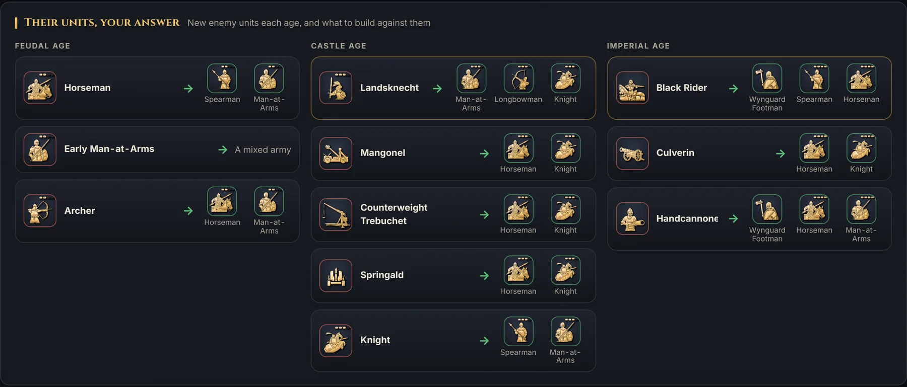
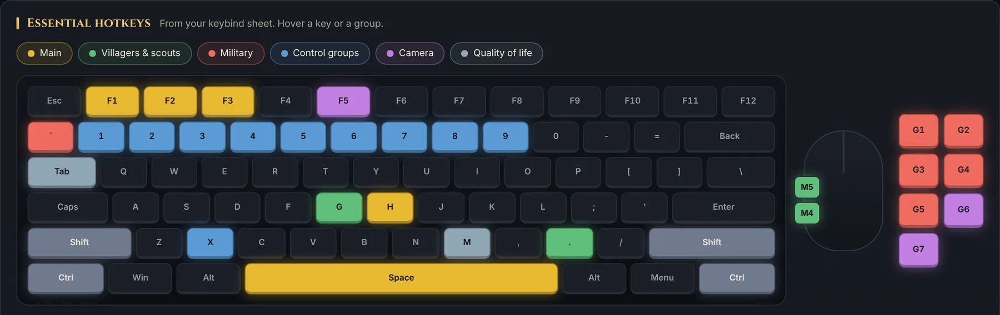

Danger windows
See when the game swings.
Your win rate in this exact matchup, split by when the game ends, from thousands of ranked games on the current patch. You'll know whether to end it early or drag them late.

Free companion for Age of Empires IV
The moment your ranked or quick match goes live, Feudal spots both civs and opens your brief: when they're dangerous, how to play it, and what beats their army. No clicks needed while you play.
Windows 10 and 11. Free forever. No ads, no account.

Through Steam, the Steam account already on your PC, or your in-game name for Xbox and Game Pass.
Leave Feudal open on a second screen or in the background. It checks for a new match every 15 seconds.
Both civs are detected and the brief opens on its own. Glance, then go play.
Danger windows
Your win rate in this exact matchup, split by when the game ends, from thousands of ranked games on the current patch. You'll know whether to end it early or drag them late.

Game plans
A branching timeline from the opening through two Feudal paths and their Castle follow-ups, with landmarks, units and villager splits. Condensed from pro build orders and refreshed as the meta moves.

Scouting
Every landmark they can age up with, what it usually means, and when it hits. Spot Meinwerk Palace and you know Men-at-Arms are about to walk at your gold.

Counters
Each enemy unit by age, matched with what to build from your own roster. Worked out from real unit stats: bonus damage, armor, HP and cost.

Hotkeys
The essential grid hotkeys on a real keyboard, grouped by job, plus a counter chart for quick reference.

Rating, league, rating history, win rate per civ and map, and past seasons, for you or anyone you look up.
Their most-played civs, win rate, and how often their games end before 15 minutes.
New versions install while you're out of a game, then the app relaunches. Never mid-match.
Ban-safe by design
Feudal doesn't read game memory, game files, network traffic or your screen, so there's nothing for anti-cheat to see. Everything it knows about a live match comes from the public AoE4 World API, the same data on your loading screen and public profile.
25 civilizations and variants, so 625 pairings. Unit data tracks the current patch.
Feudal has no connection to the game. It's a separate window that reads public match data from AoE4 World, the same way the AoE4 World website does.
Only your public Steam ID, which it uses to find your AoE4 World profile. Steam's own page handles the sign-in, so Feudal never sees your password. You can also skip it and search your in-game name.
Ranked and quick-match games, which AoE4 World tracks. For custom lobbies or games against AI, open Matchups and pick both civs yourself.
No. The brief opens by itself on the loading screen, and updates wait until you're out of the match.
Yes. No ads, no account, no paid tier. Microsoft's content rules require fan tools like this to stay free.
Feudal isn't code-signed yet, so SmartScreen may warn you. Click "More info", then "Run anyway". The installer is built in the open by GitHub Actions from the source code.